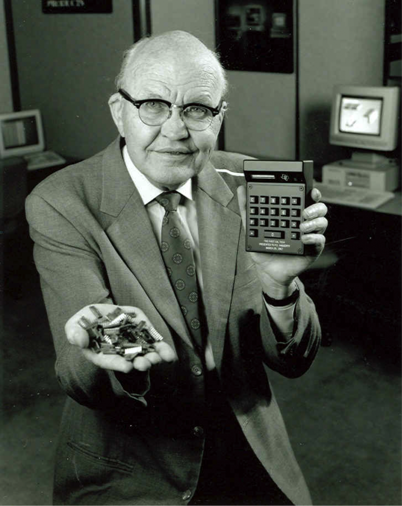

The Man Behind Integrated Circuits
Jack St. Clair Kilby was born on November 8, 1923, in Jefferson City, Missouri. When he was young, his family moved to Great Bend Kansas. His father, Hubert Kilby, was an electrical engineer and president of the Kansas Power Company of Great Bend. After an ice storm downed all the power and telephone lines, Kilby accompanied his father as he worked with amateur radio (also known as ham radio) operators to talk to customers and run the company. After experiencing this experience, the then teenage Jack Kilby became obsessed with amateur radio. He was also a fan of broadcast radio.
After high school, Kilby applied to MIT, but barely missed passing the math section of his exam. He then enrolled at his father’s university, the University of Illinois, and studied to become an electrical engineer. However, his education was interrupted by World War II. He joined the United States Army and served as a radio operator and repairman at the India-China-Burma Theatre. After his time in the army, he returned to the electrical engineering program at the University of Illinois. He graduated with a bachelor’s degree in electrical engineering in 1947.

After graduating he met his wife, Barbara Annegers Kilby and moved to Milwaukee, Wisconsin to join the Centralab Division of Globe Union, Incorporated. He oversaw designing and developing miniaturized electronic circuits. During this time Kilby also took night classes at the University of Wisconsin, Milwaukee Extension Division. He was sent by Centralab to Bell Industries to learn about their newest invention, the transistor. When Kilby returned to Centralab, he began working on germanium-based transistors. He soon realized that he would need the resources of a larger company to miniaturize circuits, and in 1958 he transferred to Texas Instruments Inc., located in Dallas, Texas. During his time at Texas Instruments, Kilby made major breakthroughs with miniaturized circuits. He realized that he could make the entire assembly as one unit instead of connecting different pieces together. He did it by using a material with semi-conductive properties and overlaying it with other impurities to replicate electronic components, like resistors, capacitors, and transistors. Not long after, he had a working prototype made from germanium that was the size of a postage stamp. In February 1959, Texas Instruments filed a patent application for the miniaturized electronic circuit (the world’s first integrated circuit). The circuit was Kilby’s most important patent, however, he had over 50 patents. Many of his patents were improvements and modifications for his integrated circuit. One of which was for an integrated circuit powered computer Texas Instruments designed for the U.S. Airforce. Another was for an integrated circuit designed for use in the U.S. Airforce’s Minuteman ballistic missile guidance system. In 1967 he designed the first integrated circuit calculator, called the Pocketronic. At first the calculator required too many circuits to be manufactured for consumers, but by the early 1970s it required less and was sold as the TI Datamath pocket calculator. Over time, integrated circuits have made their way into many areas of everyday life. They are found in every electronic device that has a microprocessor, from phones, to music players, to computers. In 1970, Jack Kilby took a leave of absence from Texas Instruments to focus on his own independent work. He mainly focused on how to apply silicon technology to help generate electrical power from sunlight. From 1978 to 1984, Kilby was a Distinguished Professor of Electrical Engineering at Texas A&M University. He fully retired from Texas Instruments in the 1980s, however he still was involved with the company.